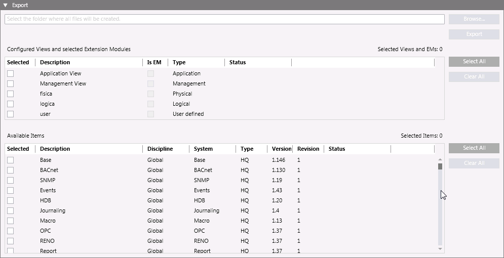

Export of Texts for Localization
You can selectively export texts of system views and libraries only in the language of the current user (for example, en-US by default). For instructions see Exporting Texts to Localize.
The export process generates the following:
- A single views XML file (for example, Views (en-US).xml) containing both the standard and user views selected for the export.
- Multiple libraries XML files, one for each Library to export (for example, BA_Device_APOGEE_HQ_1.xml or Fire_Detection_HQ_1.xml).
Localization Export Workspace
In Engineering mode, when you select the main Project node, the Localization tab provides an Export expander where you can select the texts data to export for translation into a different language.

When the export is complete, the Export dialog box displays a summary of the export results.
Items in the expander:
Configured Views and selected Extension Modules
Select the check box alongside each view whose texts you want to export.
Available Items
Select the check box alongside each item whose texts you want to export.
Browse
Select the folder where you want to save the exported XML files. This button becomes available when you selected at least one item in the list.
Select All and Clear All
Select or deselect all the items in the list.
Export
Export the selected items into one or multiple XML files. This button becomes available only when you select at least one item and the target path for the files to export. When the export is in progress, this button is replaced by Cancel to allow you to cancel the operation at any time.
Status
Indicates the progress or outcome of exporting an item (Not processed, Started, percentage of operation, Completed, Failed, or Cancelled).
The process status information also displays in the status bar.